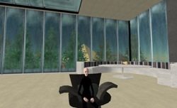
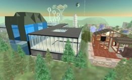

Visiting Ars Virtua
This is a legacy page. To visit Ars Virtua simply create a free account in Second Life and run the current client.
Once you have this properly installed follow one of these links: Kligerman AVAIR / permanent collection, Streaming Museum, or new exhibits.
About Ars Virtua
Located in Dowden and Seventh Eye, Ars Virtua has created both a "permanent" exhibition space and a place for rotating exhibits. With a 4000 meter two story permanent collection in Dowden and a total of 24000 meters between all our locations, Ars Virtua facilitates exploratory ventures in synthetic worlds.
The Ars Virtua Artist in Residence (AVAIR) which supports artists both in Second Life and World of Warcraft expands beyond Second Life to include the most popular fantasy game played online in the US. Ars Virtua is committed to research and furthering the dialogue around synthetic worlds, the 3D web and the creation of native art in new mediums.
Second Life is a 3D online persistent space totally created and evolved by its users. Within this vast and rapidly expanding place, you can do, create or become just about anything you can imagine.
Built-in content creation tools let you make almost anything you can imagine, in real time and in collaboration with others. An incredibly detailed digital body ('Avatar') allows a rich and customizable identity. A physics simulation running on a backbone of numerous connected computers allows you to be immersed in a visceral, interactive world. The ability to design and resell 3D content, combined with the ability to own and develop land and a microcurrency, which can be exchanged to real money creates a fertile new world for artistic exploration.


A venue for new genres.

Ars Virtua is a new media center and gallery located entirely in the synthetic world of Second Life. It is a new type of space that leverages the tension between 3-D rendered game space and terrestrial reality, between simulated and simulation.
Ars Virtua is a venue for new genres; it is also a platform for showcasing traditional artists creating still and moving images, for instance, who apply scripts to extend these into the synthetic game environment. Ars Virtua maintains a close relationship with the underlying animation engine that enables Second Life architecture and 3D rendered "sculpture." Ars Virtua brings the art audience into "new media" rather than new media to the museum or gallery, and calls upon its audience to interact with the art and one another via their avatars within the space.
Credits and collaborators.
Credits
- James Morgan - Director Ars Virtua
- John Bruneau - Webmaster, Machinimist, Maker of things
- Thomas Asmuth - Special Projects Coordinator
- Ethan Miller - Archive Project Lead
- Kyungwha Lee - Conference Coordinator
- Aaron Siegel - Founding Member, Curator Transposition
- Chris Head - Founding Member
- David Cheung - WoW Project Lead
- Michael Lowell - Exhibitions Coordinator
- Bennett Goble - Coder in Residence
- Neural Blanks - Architect
- Ama Ree - Master of Walking and in World Navigation
- Vroom Stilman - Liason for Fun
Special Thanks
- Joel Slayton
- Jo-Ann Green
AVAIR Jurors
- Jay Van Buren
- Amy Wilson
- Eddo Stern (WoW)
Conceptual Collaborators
- Dore Bowen
- Laura Jones
- Carlos Castallanos
- Helen Thorington
- Bruce Gardner
- Brad Kligerman (AVAIR)
Sponsors
- CADRE Laboratory for New Media
- turbulence.org
- New Radio and Performing Arts, Inc., (aka Ether-Ore)
- The Jerome Foundation